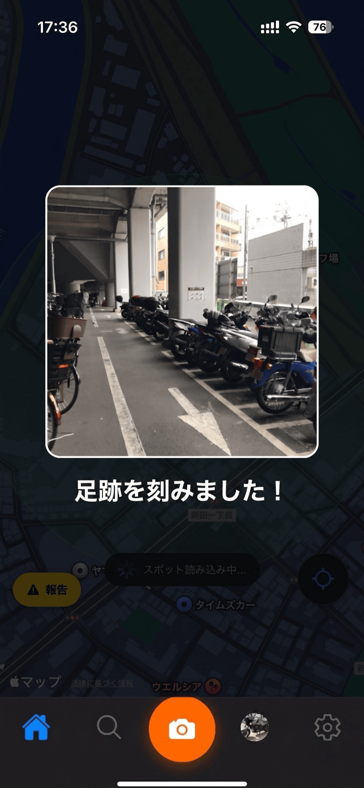
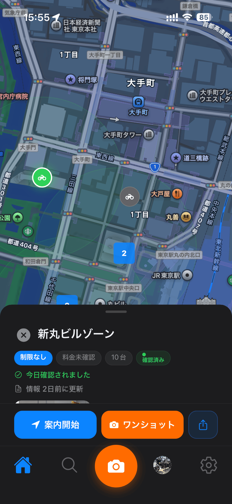
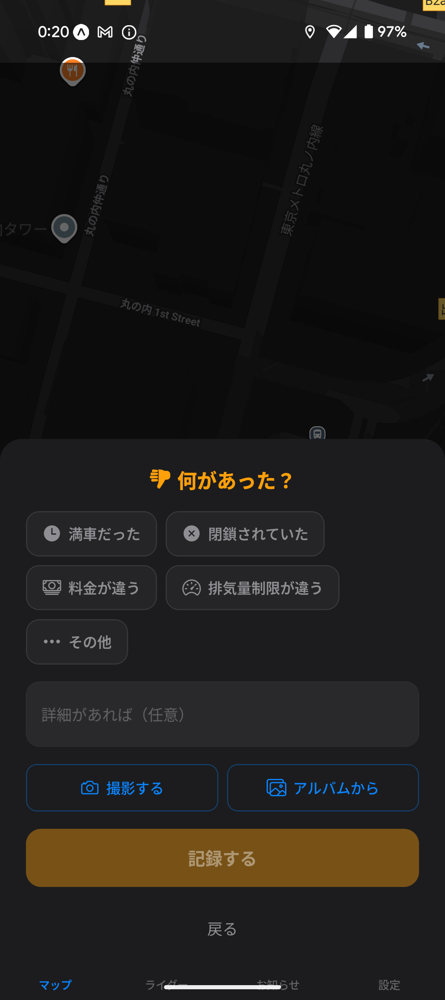

ナビは駐車場を教えてくれても駐輪場は知らない。
ワンショットが足跡になる。足跡が誰かの地図になる。
渋谷で停める場所が見つからず3周した夜。
新宿で「大型お断り」の看板を着いてから読んだ朝。
ナビは駐車場を教えてくれても駐輪場は知らない。
Google Maps は車のための地図だ。
バイク乗りはいつだって地図の上では透明人間だった。
だから自分たちの地図をつくることにした。
写真1枚。それだけでいい。
ワンショットが足跡になる。
足跡が誰かの地図になる。
到着して、写真1枚。それだけ。グローブをしたまま、片手で。
分類も評価も入力もいらない。AI が裏で全部やる。
君がやったのは「停めた」じゃない。「足跡を刻んだ」だ。

「今日確認」「3日前」「先週」。地図のピンには時間が刻まれている。
古い情報は静かに薄れ、新しい足跡が地図を更新する。
誰かのワンショットが、君が走る今夜のヒントになる。

報告じゃない。貢献じゃない。ランクもない。星もない。
ただ、自分のノートに残った1枚が、どこかの誰かの今夜を救う。
利己が利他になる。設計された偶然。

自分の1枚が
誰かの地図になる。
βテスター3つの特権。1,300件のスポットがまだ匿名のまま、最初の足跡を待っている。
3ステップ。所要1分。すべて無料。
1,300件のスポットが、最初のワンショットを待っている。
メールアドレスだけ。30秒で完了。